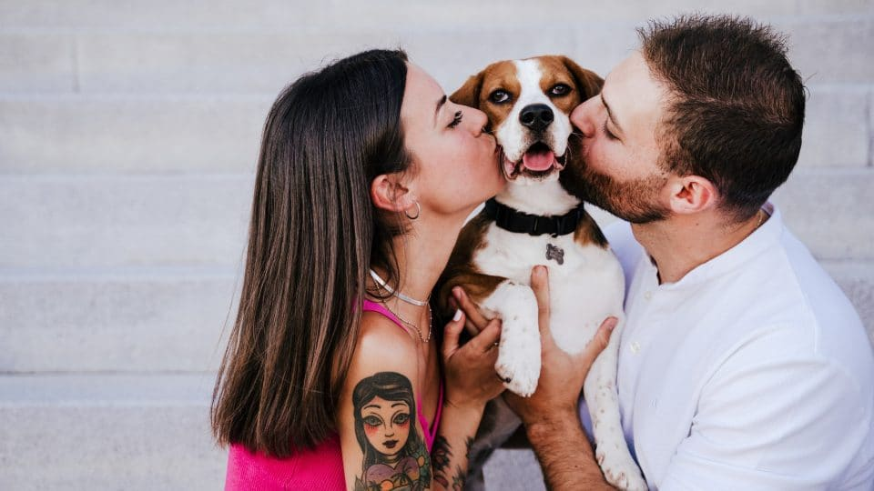

Thank You, My Pet: A Heartfelt Gratitude to Our Furry Companions

As pet owners, we are often the ones providing care, love, and
attention to our furry friends. Yet, it's important to take a moment
to pause and reflect on the profound gratitude we owe to our beloved
pets. In this blog post, let's explore the reasons why we say, "Thank
you, my pet," and celebrate the unique bond that enriches our lives in
countless ways.
Unconditional Love and Companionship
From the wag of a tail to the gentle purring, our pets offer us a love
that knows no bounds. They stand by us through thick and thin,
providing unwavering companionship. Whether it's a joyful day filled
with laughter or a challenging moment when we need solace, our pets
are there, offering comfort without judgment. Their unconditional love
is a priceless gift that deserves our deepest appreciation.
Teaching Us About Presence and Joy
Pets have an incredible ability to live in the present moment, finding
joy in the simplest of things. Whether it's chasing a ball, basking in
the sunlight, or savoring a treat, they teach us the importance of
embracing the now. In a world filled with distractions, our pets serve
as reminders to appreciate life's small pleasures and find happiness
in the present.
Offering Comfort in Times of Need
Life's journey is marked by both joyous highs and challenging lows.
During difficult times, our pets become sources of solace and comfort.
They have an innate sense of when we need a paw to lean on or a soft
purr to soothe our worries. Their presence becomes a sanctuary,
providing a haven of tranquility in the midst of life's storms.
Fostering a Healthy Lifestyle
The responsibilities of pet ownership often encourage a healthier
lifestyle. Daily walks, playtime, and the need for routine care
contribute to our physical activity and well-being. Our pets motivate
us to stay active, maintain a regular schedule, and embrace a
healthier lifestyle that benefits both us and our furry friends.
Silent Companionship, Profound Impact
Sometimes, the most profound connections are communicated without
words. Our pets listen without judgment, offering a comforting
presence during moments of silence. Whether it's sharing the couch, a
quiet evening together, or the simple act of being near, our pets
create a bond that transcends language and speaks to the soul. In
conclusion, let's take a moment to express our heartfelt gratitude to
our pets. "Thank you, my pet," for the joy, companionship, and
unconditional love you bring into our lives. As we navigate the
journey of pet ownership, may we cherish and celebrate the
extraordinary bond that makes every day brighter, simply because our
pets are a part of it. So here's to our furry, feathered, or scaled
companions – thank you for being our friends, confidantes, and sources
of endless joy. Your presence is truly a gift that enriches our lives
in ways words can never fully capture.
Thank you, my pet, for being an integral part of our lives.